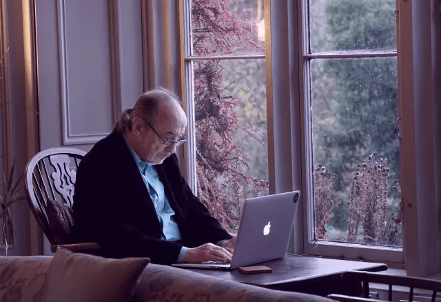

Digitale Rechte und Schutz
Gesetzgebung muss mit der Digitalisierung Schritt halten

Willkommen im Dschungel
Wenn es um digitale Rechte und Verbraucherschutz geht, scheinen die EU-Institutionen immer noch in Magnetbändern und Faxgeräten zu denken. Während die USA und China versuchen zu dominieren, schafft die EU Regulierung, die sicherstellt, dass Europa keine Rolle spielen wird. Am anderen Ende des Internets erlaubt die EU ungefilterten Zugang zu US-amerikanischen und chinesischen sozialen Medien, als würden diese nicht als Instrumente politischer Propaganda genutzt werden oder dafür sorgen, dass unsere junge Generation mit einer Aufmerksamkeitsspanne von 30 Sekunden aufwächst, sich minderwertig fühlt, weil sie sich keine Dubai-Schokolade leisten kann, und nicht in der Lage ist, ein einfaches Textdokument per E-Mail zu versenden. Schlimmer noch: Wir führen Cybersicherheitsgesetze ein, die auf das Abhaken von Kästchen und Überwachung hinauslaufen, anstatt die wirklichen Risiken anzugehen, die nicht nur technologischen Abhängigkeiten beinhalten, sondern auch Online-Betrug bis hin zu Cyberangriffen.
Wie in anderen Bereichen fehlt uns eine europäische Vision wie europäische Technologie aussehen und funktionieren soll. Es gibt keinen Grund, dem digitalen „Geschäftsmodell“ der USA oder Chinas zu folgen - also weder einem darwinistischen Wilden Westen nachzueifern, noch einem orwell’schen Staat, der jedem Bürger einen sozialen Benimm-Score zuteilt. Wie sollte also das digitale Geschäftsmodell der EU aussehen? Ein Aspekt, der mir wichtig ist und über den ich wenig höre und sehe, sind digitale Rechte und Verbraucherschutz.
Denken wir an soziale Medien: Wissen wir, wie viele Bots Meinungen in Masse fabrizieren, um künstliche Popularität zu erzeugen, oder welche Algorithmen bevorzugt welche Narrativen verbreiten? Die EU sollte diese oder jene Narrative nicht verbieten, aber sie muss gleiche Wettbewerbsbedingungen in Bezug auf Reichweite gewährleisten. Wenn manche Plattformen ihre Reichweite nutzen, um bestimmte Meinungen durchzusetzen, müssen diese entweder Transparenz bieten oder besser noch, Nutzerinhalte in interoperablen Formaten bereitstellen, die dann auch extern eingesehen werden können.
Ein weiteres Beispiel ist KI oder LLM-Modelle (Chatgpt), die nicht nur urheberrechtlich geschützte Inhalte illegal scrapen, sondern dadurch auch die meisten Webseiten permanent "attackieren", da diese die schiere Zahl der Download-Anfragen nicht bewältigen können. Webseiten verfügen über eine robot.txt-Datei, die definiert, welche Inhalte angesehen oder gecrawlt werden dürfen. Die EU könnte einfach die robot.txt rechtlich verbindlich, die Identifizierung von Crawlern zur Pflicht machen und Sammelklagen gegen illegales Scraping zulassen.
Ein letztes Beispiel ist der grassierende Online-Betrug, von Romance-Scams bis zu Cyberangriffen. Wir haben ein scheinbar solides System bei Kreditkartenbetrug, bei dem Finanzinstitute verpflichtet sind, verdächtige Transaktionen zu identifizieren - wie meine Bank, die anruft und fragt, ob ich gerade einen Fernseher für 3.000 € in Japan gekauft habe. Wenn nicht, wurde meine Kreditkarte gestohlen, ich erhalte eine neue und die Transaktion wird storniert. Aber wenn der einsame Großvater 25.000 € an seine vermeintliche Nichte in Ghana überweist, oder eben diese Nichte für 1.000 € iTunes-Geschenkkarten auf einmal kauft und die Codes an jemanden verschickt - ohne dass Bank noch Händler dafür haftbar gemacht werden können, bleibt dem Mißbrauch Tür und Tor geöffnet.
Theoretisch könnten einfache gesetzliche Änderungen viel bewirken. Was schlägt die EU stattdessen vor: Chat Control – die vollständige orwell’sche Überwachung aller privaten Gespräche aller Menschen. Wir können froh sein, wenn wir am Ende nur ein soziales System wie in China haben, das uns nur daran hindert, Bustickets zu kaufen, wenn wir eine Regierungsmaßnahme kritisiert haben. Sie stecken einen Brief in einen Briefumschlag in der Annahme, dass niemand zwischen Sender und Empfänger lesen kann, was Sie geschrieben haben. Dasselbe sollte auch für alle anderen Formen privater Kommunikation gelten, und die EU sollte an den Pranger gestellt werden, wenn sie versucht, die Privatsphäre der Bürger abzuschaffen – von Chat Control bis zu Bargeld.
Meine Schwerpunkte
-
Interoperabilität
Der Digital Services Act verlangt, dass Cloud-Anbieter interoperabel sind, sodass ich meinen Cloud-Dienst von einem Anbieter zum anderen übertragen kann. Dasselbe sollte auch für Online-Inhalte gelten. Sie sollten dem Autor gehören (und nicht der Plattform, auf der sie veröffentlicht werden - eine wichtige Änderung) und alle Plattformen sollten interoperable Formate mit öffentlichen APIs verwenden, sodass ich einen Beitrag auf mehreren Plattformen gleichzeitig veröffentlichen und, noch wichtiger, Beiträge von wem auch immer und wo auch immer ich möchte in meinen privaten Feed ziehen kann. Die EU muss kein eigenes Facebook bauen. Interoperabilität wird es den Nutzern ermöglichen, in ihrem eigenen Feed das zu sehen, was sie wollen – keine Bots, keine KI-Algorithmen, keine zentrale oder föderierte Plattform.
-
Privatsphäre
Das Leben sollte kein Beliebtheitswettbewerb sein, und unser digitales Leben sollte auch nicht gamifiziert werden, sodass wir Punkte sammeln, wenn wir unsere Steuererklärung pünktlich abgeben, und sie verlieren oder vom Reisen ausgeschlossen werden, wenn wir uns darüber beschweren, dass die Deutsche Bahn nicht pünktlich ist. Das Briefgeheimnis, das für Papierbriefe gilt, ist in den Verfassungen vieler Länder verankert. Es sollte auch für digitale Nachrichten gelten, und jeder Versuch von EU- oder nationalen Regierungen, Massenüberwachung einzuführen, muss gestoppt werden. Sonst könnten wir auch gleich Papierumschläge abschaffen, weil Terroristen einfach anfangen könnten, Briefe zu schreiben.
-
Verantwortlichkeit
Finanzintermediäre bieten den Dienst an, Ihr Geld von einem Konto auf ein anderes zu transferieren. Dieser Dienst muss bereits bestimmte gesetzliche Anforderungen wie Geldwäschebestimmungen genügen. Er sollte auch Verpflichtungen zur Sorgfaltspflicht in Bezug auf KYC (Know Your Customer) und zur Gewährleistung der Sicherheit des Finanzdienstes beinhalten. Dienstleister sollten daher für die Durchführung betrügerischer Transaktionen haftbar gemacht werden. Dazu sollte nicht nur die Bank gehören, wenn Ihr Großvater die oben genannten 25.000 € nach Ghana überweist, sondern auch Online-Händler, die Geschenkkarten verkaufen, die Geldwäsche erleichtern und als semi-anonyme Währung im Untergrund verwendet werden.
Relevante Blog Posts
-

Chat Control: Weg mit dem Briefgeheimnis!
(Sven Franck, )
Auch wenn 72% der europäischen Bevölkerung dagegen sind, könnte die Totalüberwachung unserer digitalen Kommunikation bald Realität werden. Kann man ja auch gleich das Briefgeheimnis abschaffen. Artikel lesen. -

Sollte die EU die sozialen Medien abschalten?
(Sven Franck, )
Die öffentliche Befragung zu Europa's zukünftigem Schutzschild für Demokratie ist kurz vor dem Ende und trotz hohem Hintegrundlärm aus der Slowakei ist es dringend, unsere demokratischen Systeme resilienter zu machen. Artikel lesen. -

Bananen? Gebogen. Deckel? Fixiert. Soziale Medien: Bitte hier lang!
(Sven Franck, )
Die negativen Auswirkungen sozialer Medien stellen deren Vorzüge schon lange vor dem Amtsantritt Donald Trumps in den Schatten. Wie bei Fast Food hätte die Europäische Kommission die regulatorischen Mittel, um Bürger zu schützen. Sie könnte die europäische Online-Welt zu einem besseren Ort machen. Es wird höchste Zeit. Artikel lesen.